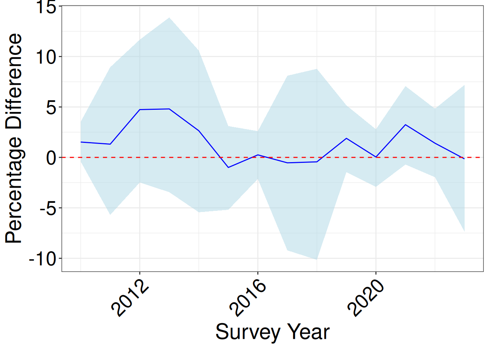

Code
library(dplyr)
library(tidyr)
library(ggplot2)
library(stringr)
library(eawsAnalysis)
library(sf)
library(brms)
library(tidybayes)
library(patchwork)
wetlands_with_valleys <- read.csv("data/wetlands_with_valleys.csv") library(dplyr)
library(tidyr)
library(ggplot2)
library(stringr)
library(eawsAnalysis)
library(sf)
library(brms)
library(tidybayes)
library(patchwork)
wetlands_with_valleys <- read.csv("data/wetlands_with_valleys.csv") Again, have omitted cleaning information here. See Github repo for full details. We need to pull in all the other data because we want to keep all variables at the levels they were in a given year, and only manipulate the flow variables.
# Rainfall data
asset_precip <- read.csv("data/asset_precip_data.csv")
valley_precip <- read.csv("data/valley_precip_data.csv")
precip <- read.csv("data/precip_data.csv")
# SWC (flooding) data
swc <- read.csv("data/australia_annual_water_area_presence.csv")
wetlands_swc <- read.csv("data/wetland_inundation_results.csv")
basin_swc <- read.csv("data/basin_inundation_results.csv")
valleys_swc <- read.csv("data/valley_inundation_results.csv")
# Flow data
combined_flow_data <- read.csv("data/combined_flow_data.csv")
combined_flow_metadata <- read.csv("data/combined_flow_metadata.csv")
total_flow <- read.csv("data/total_flow.csv")I give a short overview of the cleaning of these data here. For other wetlands, this may not be the same, but the required outputs will be similar.
Here’s the raw data
ewater <- read.csv("data/eflows.csv")
glimpse(ewater)Rows: 330
Columns: 14
$ water_year <chr> "1996/97", "1996/97", "1996/97", "1996/97", "1996/97", …
$ year <int> 1996, 1996, 1996, 1996, 1996, 1996, 1997, 1997, 1997, 1…
$ month <chr> "July", "August", "September", "October", "November", "…
$ marebone_break <int> 7735, 13509, 23272, 21629, 7534, 11376, 14055, 12117, 6…
$ mac_river <int> 14814, 66065, 68411, 44727, 10832, 18806, 15539, 25136,…
$ marebone_total <int> 22549, 79573, 91683, 66356, 18367, 30182, 29593, 37253,…
$ baseflow <int> 310, 310, 300, 310, 300, 310, 310, 280, 310, 300, 310, …
$ irrigation <int> NA, NA, NA, NA, NA, NA, NA, NA, NA, NA, NA, NA, NA, NA,…
$ EWA <int> 17303, 50137, 61885, 37548, 12476, 10806, 0, 0, 0, 0, 0…
$ NSW_AEW <int> 0, 0, 0, 0, 0, 0, 0, 0, 0, 0, 0, 0, 0, 0, 0, 0, 0, 0, 0…
$ CEWH <int> 0, 0, 0, 0, 0, 0, 0, 0, 0, 0, 0, 0, 0, 0, 0, 0, 0, 0, 0…
$ env_flow <int> 17303, 50137, 61885, 37548, 12476, 10806, 0, 0, 0, 0, 0…
$ FMZ <int> 0, 0, 0, 0, 0, 0, 0, 0, 0, 0, 0, 0, 0, 0, 0, 0, 0, 0, 0…
$ other <int> 4936, 29126, 29498, 28498, 5591, 19066, 29283, 36973, 1…The data is grouped by month, and has a bunch of different water classifications. What we really care about is the total flow, and the non-environmental flow in the year or three months preceeding the survey.
We sum by year and get the 3 month sum for each year (across all columns). Then we create a new column for non-environmental flow, which is the total flow minus the environmental flow. So for every year, we end up with a total flow, environmental flow, and non-environmental flow for the year and the 3 months preceeding the survey.
ewater_wy <- ewater |>
mutate(
month_num = match(month, month.name),
date = as.Date(paste(year, month_num, 1, sep = "-")),
# Nov-Oct water year: Nov+ belongs to following year's Oct label
water_year_nov = if_else(month_num >= 11, year + 1L, as.integer(year))
)
# Annual summary
ewater_annual <- ewater_wy |>
summarise(
across(c(marebone_total, env_flow, EWA, FMZ, irrigation, baseflow, other), sum, na.rm = TRUE),
.by = water_year_nov
) |>
arrange(water_year_nov)
ewater_annual <- ewater_annual |>
mutate(
non_env_flow = marebone_total - env_flow
) |>
select(water_year_nov, non_env_flow, env_flow, marebone_total)
# Now the 3m
ewater_wy_3m <- ewater |>
mutate(
month_num = match(month, month.name),
date = as.Date(paste(year, month_num, 1, sep = "-")),
# Nov-Oct water year: Nov+ belongs to following year's Oct label
water_year_nov = if_else(month_num >= 11, year + 1L, as.integer(year))
) %>%
filter(month_num >= 7, month_num < 10) # preceding 3 months
ewater_annual_3m <- ewater_wy_3m |>
summarise(
marebone_total_3m = sum(marebone_total, na.rm = TRUE),
env_flow_3m = sum(env_flow, na.rm = TRUE),
EWA_3m = sum(EWA, na.rm = TRUE),
FMZ_3m = sum(FMZ, na.rm = TRUE),
irrigation_3m = sum(irrigation, na.rm = TRUE),
baseflow_3m = sum(baseflow, na.rm = TRUE),
other_3m = sum(other, na.rm = TRUE),
.by = water_year_nov
) |>
arrange(water_year_nov)
ewater_annual_3m <- ewater_annual_3m |>
mutate(
non_env_flow_3m = marebone_total_3m - env_flow_3m
) |>
select(water_year_nov, non_env_flow_3m, env_flow_3m, marebone_total_3m)
ewater_annual <- ewater_annual |>
left_join(ewater_annual_3m, by = "water_year_nov")
ewater_annual# A tibble: 29 × 7
water_year_nov non_env_flow env_flow marebone_total non_env_flow_3m
<int> <int> <int> <int> <int>
1 1996 93288 166873 260161 64480
2 1997 158041 38752 196793 20927
3 1998 648163 8838 657001 425173
4 1999 358584 113407 471991 17426
5 2000 918225 22131 940356 286013
6 2001 511074 166285 677359 28022
7 2002 151573 47354 198927 12932
8 2003 104584 44457 149041 33870
9 2004 62848 0 62848 11152
10 2005 63418 0 63418 13333
# ℹ 19 more rows
# ℹ 2 more variables: env_flow_3m <int>, marebone_total_3m <int>We do some renaming to make the columns match the training data, and also grab the scaling data
mac_scaling <- combined_flow_metadata |>
filter(wetlands == "macquarie marshes") |>
slice(1) |>
select(
wetland_mean_flow_3m,
wetland_sd_flow_3m,
wetland_mean_flow_annual,
wetland_sd_flow_annual
)
ewater_annual <- ewater_annual |>
mutate(
wetland_flow_annual_scaled_total = (marebone_total - mac_scaling$wetland_mean_flow_annual) / mac_scaling$wetland_sd_flow_annual,
wetland_flow_annual_scaled_non_env = ((non_env_flow) - mac_scaling$wetland_mean_flow_annual) / mac_scaling$wetland_sd_flow_annual,
wetland_flow_annual_scaled_total_lagged = lag(wetland_flow_annual_scaled_total),
wetland_flow_annual_scaled_non_env_lagged = lag(wetland_flow_annual_scaled_non_env),
wetland_flow_3m_scaled_total = (marebone_total_3m - mac_scaling$wetland_mean_flow_3m) / mac_scaling$wetland_sd_flow_3m,
wetland_flow_3m_scaled_non_env = ((non_env_flow_3m ) - mac_scaling$wetland_mean_flow_3m) / mac_scaling$wetland_sd_flow_3m,
wetland_flow_3m_scaled_total_lagged = lag(wetland_flow_3m_scaled_total),
wetland_flow_3m_scaled_non_env_lagged = lag(wetland_flow_3m_scaled_non_env)
)We load in other variables that we need
full_data <- tibble(surv_year = seq(2010, 2024), Wetland = "macquarie marshes") %>%
left_join(
asset_precip %>% mutate(Wetland = str_to_lower(Wetland)),
join_by(surv_year == year, Wetland == Wetland)
) %>%
left_join(wetlands_with_valleys) %>%
mutate(ValleyName = str_to_lower(ValleyName)) %>%
left_join(
valley_precip,
join_by(surv_year == year, ValleyName == valleyname)
) %>%
left_join(precip, by = join_by("surv_year" == "year")) %>%
left_join(
combined_flow_data,
by = join_by("surv_year" == "water_year", Wetland == wetlands)
) %>%
filter(
!is.na(wetland_flow_annual_scaled)
) %>%
left_join(total_flow, by = join_by("surv_year" == "water_year")) %>%
left_join(swc, join_by('surv_year' == "year")) %>%
select(
-c(
subwetland,
asset_precip_3m,
asset_precip,
X,
valley_precip_3m,
valley_precip,
basin_precip_3m,
basin_precip,
flow_3m,
flow,
water_area_m2
)
) %>%
mutate(id = row_number())and make the coutnerfactual datasets - one with environmental flow, one without
new_data_with_env <- full_data %>%
filter(Wetland == "macquarie marshes") %>%
select(
-c(
wetland_flow_3m_scaled,
wetland_flow_annual_scaled,
wetland_flow_annual_scaled_lagged
)
) %>%
left_join(ewater_annual, by = join_by("surv_year" == "water_year_nov")) %>%
rename(
wetland_flow_3m_scaled = wetland_flow_3m_scaled_total,
wetland_flow_annual_scaled = wetland_flow_annual_scaled_total,
wetland_flow_annual_scaled_lagged = wetland_flow_annual_scaled_total_lagged
) %>%
select(
-c(
marebone_total,
env_flow,
non_env_flow,
marebone_total_3m,
env_flow_3m,
wetland_flow_3m_scaled_non_env,
wetland_flow_3m_scaled_non_env_lagged,
wetland_flow_annual_scaled_non_env,
wetland_flow_annual_scaled_non_env_lagged
)
)|> mutate(across(everything(), ~replace_na(.x, 0)))|> ungroup()
new_data_no_env <- full_data |>
filter(Wetland == "macquarie marshes") %>%
select(
-c(
wetland_flow_3m_scaled,
wetland_flow_annual_scaled,
wetland_flow_annual_scaled_lagged
)
) %>%
left_join(ewater_annual, by = join_by("surv_year" == "water_year_nov")) %>%
rename(
wetland_flow_3m_scaled = wetland_flow_3m_scaled_non_env,
wetland_flow_annual_scaled = wetland_flow_annual_scaled_non_env,
wetland_flow_annual_scaled_lagged = wetland_flow_annual_scaled_non_env_lagged
) %>%
select(
-c(
marebone_total,
env_flow,
non_env_flow,
marebone_total_3m,
env_flow_3m,
non_env_flow_3m,
wetland_flow_3m_scaled_total,
wetland_flow_3m_scaled_total_lagged,
wetland_flow_annual_scaled_total,
wetland_flow_annual_scaled_total_lagged
)
) |> mutate(across(everything(), ~replace_na(.x, 0)))|> ungroup()Now we can run the models and make some plots/tables
overall_abund <- readRDS("data/m1.1.rds")
predicted_with_env <- overall_abund %>%
epred_draws(newdata = new_data_with_env, re_formula = NULL)
predicted_no_env <- overall_abund %>%
epred_draws(newdata = new_data_no_env, re_formula = NULL)
output_df <- predicted_with_env |>
ungroup() |>
filter(surv_year != 2024) |>
select(surv_year, .draw, .epred) |>
inner_join(
predicted_no_env |>
filter(surv_year != 2024) |>
select(surv_year, .draw, .epred_no_env = .epred),
by = join_by(surv_year, .draw)
) |>
mutate(
diff = .epred - .epred_no_env,
pct_diff = (.epred - .epred_no_env) / .epred * 100
) |>
group_by(surv_year) |>
median_hdci(diff, pct_diff, .width = 0.95)
overall_abund_pct <- output_df |>
ggplot(aes(x = surv_year, y = pct_diff )) +
geom_ribbon(aes(ymin = pct_diff.lower, ymax = pct_diff.upper), fill = "lightblue", alpha = 0.5) +
geom_line(color = "blue") +
geom_hline(yintercept = 0, linetype = "dashed", color = "red") +
labs(
x = "Survey Year",
y = "Percentage Difference"
) +
my_theme() +
theme(axis.text.x = element_text(angle = 45, hjust = 1))Here’s the table
and the plot
